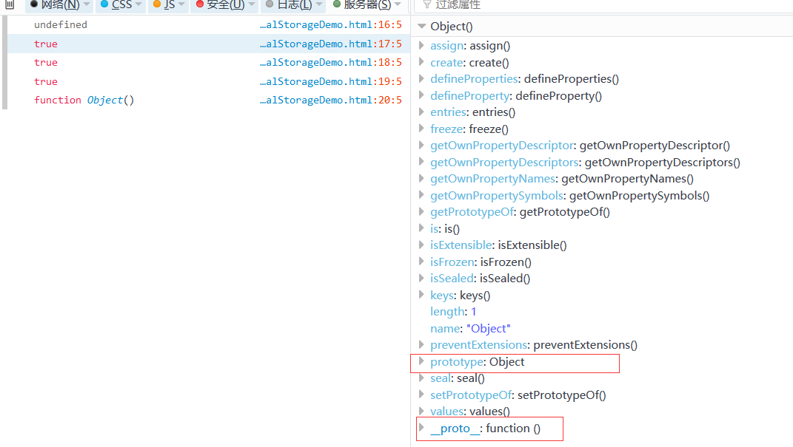

_javascript技巧_脚本之家_files/erwm.jpg)
基于js中的原型(全面讲解)
在讲js的原型之前，必须先了解下Object和Function。
Object和Function都作为JS的自带函数，Object继承自己，Funtion继承自己，Object和Function互相是继承对方，也就是说Object和Function都既是函数也是对象。
Object 是 Function的实例，而Function是它自己的实例。
1 2 | console.log(Function.prototype); // ƒ () { [native code] }console.log(Object.prototype); // Object |
普通对象和函数对象
JavaScript中万物皆对象，但对象之间也是有区别的。分为函数对象和普通对象。
函数对象可以创建普通对象，普通对象没法创建函数对象，普通对象JS世界中最低级的小喽��，啥特权也没有。
凡是通过new Function创建的对象都是函数对象，其他都是普通对象（通常通过Object创建），可以通过typeof来判断。
1 2 3 4 5 6 7 8 9 | function f1(){};typeof f1 //"function"var o1 = new f1();typeof o1 //"object"var o2 = {};typeof o2 //"object" |
这边要注意的是下面这两种写法是一样的
prototype、_proto_和construetor（构造函数）
下面两句话也很重要
1、每一个函数对象都有一个prototype属性，但是普通对象是没有的；
prototype下面又有个construetor，指向这个函数。
2、每个对象都有一个名为_proto_的内部属性，指向它所对应的构造函数的原型对象，原型链基于_proto_;
好了,开始上代码和例子,建一个普通对象，我们可以看到
1、o的确没有prototype属性
2、o是Object的实例
3、o的__proto__指向Object的prototype
4、Object.prototype.constructor指向Object本身
还可以继续往下延伸......
1 2 3 4 5 6 7 | var o = {}; console.log(o.prototype); //undefined console.log(o instanceof Object); //true console.log(o.__proto__ === Object.prototype) //true console.log(Object === Object.prototype.constructor) //true console.log(Object.prototype.constructor) //function Object() console.log(Object.prototype.__proto__); //null |

下面来一个函数对象，从下面的例子可以看出
1、demo是函数对象，f1还是普通对象
2、f1是Demo的实例
3、demo的原型prototype的__proto__指向Object的原型prototype,而Object的原型prototyped的__proto__指向null;
1 2 3 4 5 6 7 8 | function Demo(){}; var f1 = new Demo(); console.log(f1.prototype); //undefined console.log(f1 instanceof Demo); //true console.log(f1.__proto__ === Demo.prototype); //true console.log(Demo === Demo.prototype.constructor) ;//true console.log(Demo.prototype.__proto__ === Object.prototype) ;//true console.log(Object.prototype.__proto__); //null |
_javascript技巧_脚本之家_files/201709190805006.png)
原型链
javascript中，每个对象都会在内部生成一个proto 属性，当我们访问一个对象属性时，如果这个对象不存在就回去proto 指向的对象里面找，一层一层找下去，这就是javascript原型链的概念。
f1.__proto__ ==> Demo.prototype ==> Demo.prototype.__proto__ ==> Object.prototype ==> Object.prototype.__proto__ ==> null
JS中所有的东西都是对象,所有的东西都由Object衍生而来, 即所有东西原型链的终点指向null
以上这篇基于js中的原型(全面讲解)就是小编分享给大家的全部内容了，希望能给大家一个参考，也希望大家多多支持脚本之家。
您可能感兴趣的文章:
相关文章
_javascript技巧_脚本之家_files/bcimg0.png) 这篇文章主要为大家详细介绍了JavaScript制作一个简单的框选图表，具有一定的参考价值，感兴趣的小伙伴们可以参考一下2017-05-05
这篇文章主要为大家详细介绍了JavaScript制作一个简单的框选图表，具有一定的参考价值，感兴趣的小伙伴们可以参考一下2017-05-05_javascript技巧_脚本之家_files/bcimg1.png) 这篇文章主要介绍了JS实现上传图片实时预览功能,非常不错，具有参考借鉴价值，需要的朋友可以参考下2017-05-05
这篇文章主要介绍了JS实现上传图片实时预览功能,非常不错，具有参考借鉴价值，需要的朋友可以参考下2017-05-05_javascript技巧_脚本之家_files/bcimg3.png) 这篇文章主要介绍了JS数组Reduce方法功能与用法,结合实例形式详细分析了JS数组Reduce方法操作数组统计、去重等相关操作技巧,需要的朋友可以参考下2020-04-04
这篇文章主要介绍了JS数组Reduce方法功能与用法,结合实例形式详细分析了JS数组Reduce方法操作数组统计、去重等相关操作技巧,需要的朋友可以参考下2020-04-04_javascript技巧_脚本之家_files/bcimg4.png) 返回上一页的方法有很多，本代码通过图片和按钮分别实现，感兴趣的朋友可以参考下，希望对大家有所帮助2013-08-08
返回上一页的方法有很多，本代码通过图片和按钮分别实现，感兴趣的朋友可以参考下，希望对大家有所帮助2013-08-08_javascript技巧_脚本之家_files/bcimg5.png) 这篇文章主要介绍了JavaScript cookie原理及使用实例,文中通过示例代码介绍的非常详细，对大家的学习或者工作具有一定的参考学习价值,需要的朋友可以参考下2020-05-05
这篇文章主要介绍了JavaScript cookie原理及使用实例,文中通过示例代码介绍的非常详细，对大家的学习或者工作具有一定的参考学习价值,需要的朋友可以参考下2020-05-05_javascript技巧_脚本之家_files/bcimg6.png) 这篇文章主要给大家介绍了关于JS温故而知新之变量提升和时间死区的相关资料，文中通过示例代码介绍的非常详细，对大家的学习或工作具有一定的参考学习价值，需要的朋友们下面随着小编来一起学习学习吧2019-01-01
这篇文章主要给大家介绍了关于JS温故而知新之变量提升和时间死区的相关资料，文中通过示例代码介绍的非常详细，对大家的学习或工作具有一定的参考学习价值，需要的朋友们下面随着小编来一起学习学习吧2019-01-01_javascript技巧_脚本之家_files/bcimg7.png) 一个简洁的网页JS计算器，附详细代码释义。通过下边的效果演示就可以看到，这是一个挺小的js网页计算器，界面美化的我想还是不错的，毕竟在没有使用任何图片修饰的情况下，很好看，而且功能挺实用，可以完成基本的数学算数运算。2015-11-11
一个简洁的网页JS计算器，附详细代码释义。通过下边的效果演示就可以看到，这是一个挺小的js网页计算器，界面美化的我想还是不错的，毕竟在没有使用任何图片修饰的情况下，很好看，而且功能挺实用，可以完成基本的数学算数运算。2015-11-11_javascript技巧_脚本之家_files/bcimg8.png) 这篇文章主要介绍了如何基于javascript实现贪吃蛇游戏,文中通过示例代码介绍的非常详细，对大家的学习或者工作具有一定的参考学习价值,需要的朋友可以参考下2020-02-02
这篇文章主要介绍了如何基于javascript实现贪吃蛇游戏,文中通过示例代码介绍的非常详细，对大家的学习或者工作具有一定的参考学习价值,需要的朋友可以参考下2020-02-02_javascript技巧_脚本之家_files/bcimg9.png) 这篇文章主要介绍了基于JavaScript实现随机颜色输入框的实例代码，代码简单易懂，非常不错，需要的朋友参考下吧2016-12-12
这篇文章主要介绍了基于JavaScript实现随机颜色输入框的实例代码，代码简单易懂，非常不错，需要的朋友参考下吧2016-12-12
最新评论